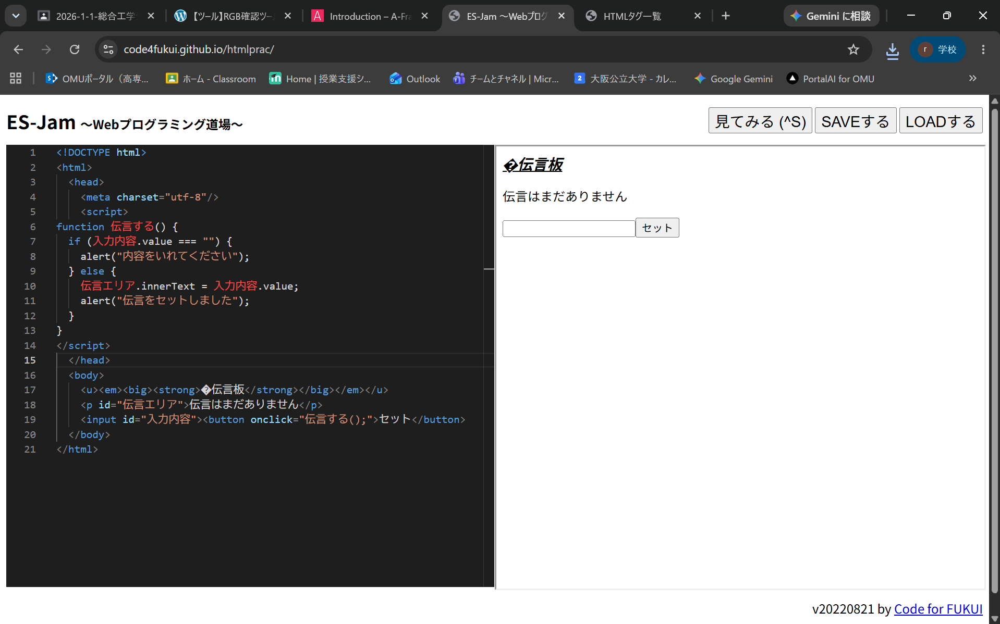

3-2 JavaScript体験：伝言プログラムを作る

伝言板
1.内容
JavaScriptを用いてWeb上で動作する伝言板アプリを制作した。
入力判定や画面書き換え処理を含むコードを入力・実行確認後、ファイルを「dengon.html」として保存し、GitHubへアップロードする流れを学習した。
2.感想
入力欄が空の際の警告表示やボタンクリックでのテキスト更新など、JavaScriptによる動的なWebページの仕組みを実感できた。
また作成したコードをGitHubに上げる作業を通じて開発の流れを学べて良かった。